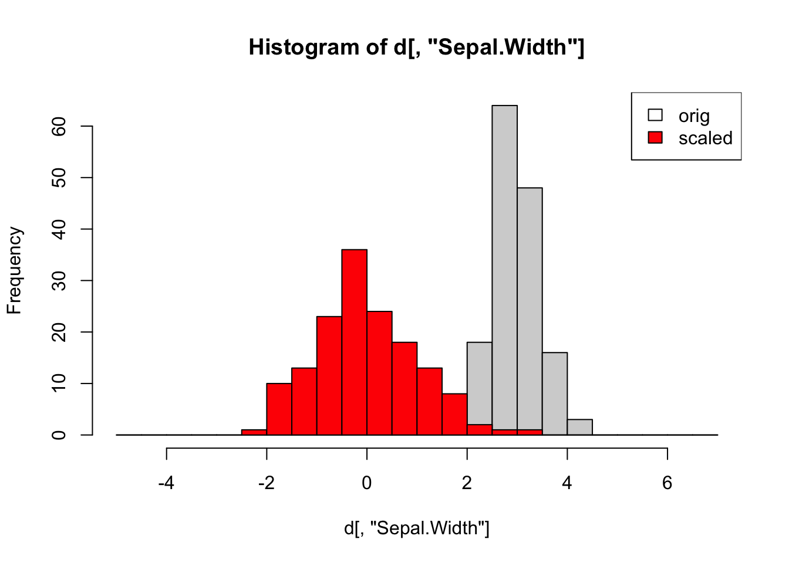

Code
d=iris[,-5] # numerical iris data (without speciee)
ds=scale(d) # scaled iris data (column-wise)
br=seq(-5,7,by=0.5) # set common break points for the histograms below
hist(d[,"Sepal.Width"], breaks = br) # illustrate scaling for specific column
hist(ds[,"Sepal.Width"], breaks = br, add=TRUE, col="red") # add histogram to current plot
legend("topright", c("orig","scaled"), fill=c("white", "red"))